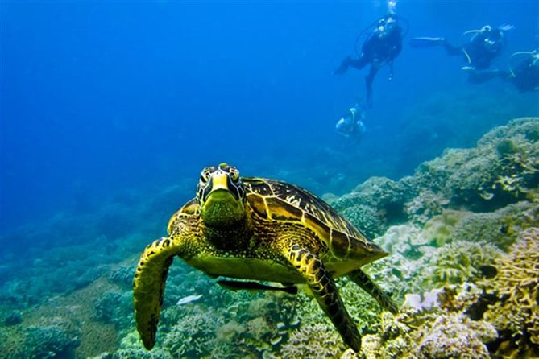
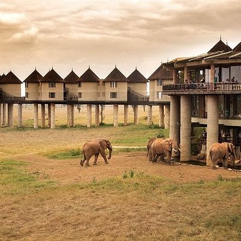

if you are looking to travel and see all the wonders in kenya, then we are the best.
join us as we explore our hidden gemsWe have a very friendly and proffesional staff who are ready to serve to your needs
We believe in service delivery to our clients and our rates are affordable.
Our main office is located in kilifi
baobab plaza 3d floor rm8let us explore the rich kenyan culture with vastness of our tradition.the white sandy beaches, the mijikenda culture and so much more
Travel and experience new culture, a new world from what you have been experiencing,tranquility and a good reatreat
Some of the services that we offer are travel expeditions,boat riding, underwater diving, air diving, hotel bookings to save you the stress,
For diving enthusiasts we have the kilifi creek where you will dive and experience the sea creatures,dive together with harmless seals,dolphins and other sea creatures
experience serene nature of the natural forest,the cradle of mankind
wild animals from elephants,leopards,lions and other wild animals the forest has to offer
We have emerged to be one of the best travel agency in kenya
if you are looking to travel in kenya and see all the wonders in kenya then we are the best
join us as we explore the hidden gems in kenya
ask travel ask charles venturesWe have a very friendly and proffesional staff who are ready to serve to your needs
We believe in service delivery to our clients and our rates are affordable.
Our main office is located in kilifi baobab plaza 3d floor rm8
let us explore the rich kenyan culture with vastness of our tradition. let us explore the white sandy beaches, the mijikenda culture and so much more
unravel the hidden gems There is something for everyone
Travel and experience new culture, a new world from what you have been experiencing,tranquility and a good reatreat
Some of the services that we offer are travel expeditions,boat riding, underwater diving, air diving, hotel bookings to save you the stress,
For diving enthusiasts we have the kilifi creek where you will dive and experience the sea creatures,dive together with harmless seals,dolphins and other sea creatures
kilifi creek experience serene nature of the natural forest,the cradle of mankind
wild animals from elephants,leopards,lions and other wild animals the forest has to offer
